Reducing Complications in Long-Term Biliary Drainage
CDE4301 Innovation & Design Capstone: Interim Report
November 2026
Team Flow-State | Project Code EIM-431
Seow Zhi Yong, Justin (Mechanical Engineering), A0272159Y
Tanya Rai (Biomedical Engineering), A0286130L
Duke-NUS Health Innovator Programme (D-HIP)
Table of Contents
1. Problem Description and Value Proposition
1.2 Complications of Long-Term Biliary Drainage
1.6 Current Workarounds and Their Gaps
3. Concept Development and Selection
3.1 Root Causes and Idea Generation
3.2 Concept Screening and Selection
4. Our Selected Concept and its Novelty
4.1 Research and Innovation Gap
5. Prototypes and Test Methods
Appendix A: Concept Screening Matrices
Appendix B: Sources of Insight
Notes from Interviews with Stakeholders
Appendix C: Side-Hole Trial Readings
Appendix E: Glossary and Acronyms
Contributions
Since this project is part of the Duke-NUS Health Innovator Programme (D-HIP), Justin and Tanya, who are the two iDP students doing this project for CDE4301, are working together with three other team members. The rest of the team also contributed to some tasks, so the report will state “the D-HIP team” when this is the case.
| Area of work | Who |
|---|---|
| Stakeholder interviews (35 people interviewed by team in total, but Justin and Tanya only 30) and creating a survey for interventional radiologists (doctors) | D-HIP team |
| Circulation of survey for interventional radiologists on online forums | Tanya |
| Creating surveys for patients, and circulating them | Tanya |
| Observed catheter exchange procedure at SGH (3 Sep 2026) | Justin and Tanya |
| Attended Medical Manufacturing Asia Trade Fair (11 Sep 2026) | Justin |
| Attended SingHealth liver and pancreas support group event (12 Sep 2026) | Tanya |
| Attended a medical conference in radiology, to speak to doctors (22 Aug 2026) | D-HIP team |
| Attending SingHealth webinar on pancreatic cancer (14 Nov 2026) | Justin and Tanya |
| Terumo site visit, to speak to R&D engineers (12 Oct 2026) | D-HIP team |
| Coming up with need criteria (criteria that any solution should fulfill) | D-HIP team |
| Concept generation and concept screening | D-HIP team |
| Test methodology and prototyping ideas | Justin and Tanya |
| CAD of the test parts and the flow model | Justin |
| Force sensor rig and bench tests | Justin and Tanya |
| Reynolds number and pressure-drop analysis | Justin |
| Automated flusher concept | Justin |
| This report | Justin and Tanya |
Acknowledgements
We would like to thank our clinical mentors, Dr Alfred Tan and Dr Apoorva Gogna (Singapore General Hospital, Department of Interventional Radiology), and our industry mentor Mr Gaurav Chhillar (Terumo Corporation) for all their help. We are also very grateful for the D-HIP faculty, especially Dr Bipin Bhola, Mr Dennis Ong, Dr Mark Chong and Mr Jeremy Lim, and our D-HIP teammates: Latika, Brandon Tay and Mari Chikusa.
We also thank all those that we have interviewed for graciously giving us their time and providing valuable insights.
1. Problem Description and Value Proposition
The information in this section has been obtained through primary and secondary research. As part of our primary research, we interviewed 30 stakeholders from seven countries, consisting of doctors, patients, and industry professionals. We also created surveys for doctors and patients. The details of our primary research, such as the interviews’ notes and survey questions, can be found in Appendix B. Meanwhile, the secondary sources we used have been cited accordingly in this report.
1.1 Clinical Context
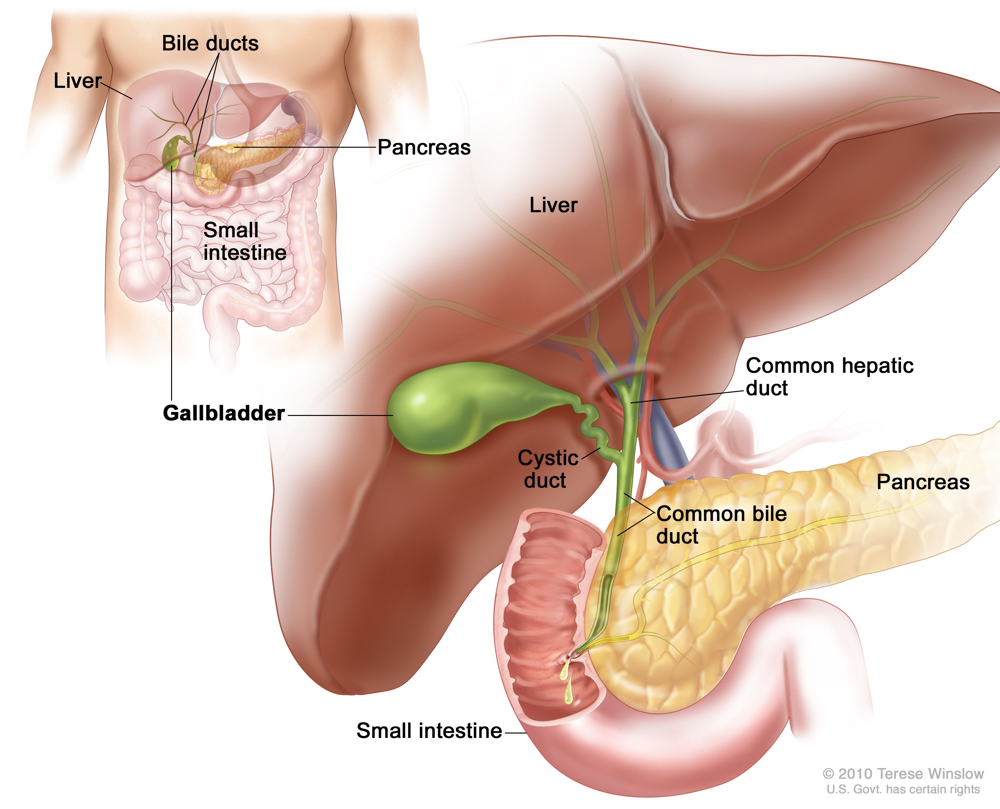
Figure 1. Anatomy of the Biliary System [1].
Bile, a fluid essential for digestion, is produced by the liver and stored by the gall bladder [2]. The bile duct functions to allow bile to flow from the liver and the gall bladder into the duodenum, which is the first part of the small intestine [3], [4]. However, conditions such as bile duct cancer or pancreatic cancer can result in the bile duct getting blocked, impeding bile flow and resulting in symptoms such as fever, jaundice, and itching [3], [5], [6].
The first choice of treatment in such a scenario would be to insert a stent via endoscopy. When this is assessed to not be possible for certain patients, or is tried but the procedure is not successful, patients may instead have a Percutaneous Transhepatic Biliary Drainage (PTBD) catheter inserted [3], [5]. The catheter passes through the skin and liver, across the blockage, and into the duodenum, as can be seen in Figure 2. Bile enters through small side holes in the catheter, and drains into the small intestine.
Patients with cancer can keep their catheter for months or even years. The catheter is routinely exchanged every three months. Interventional radiologists (IRs) are the doctors who perform the PTBD catheter insertion and exchange procedure.
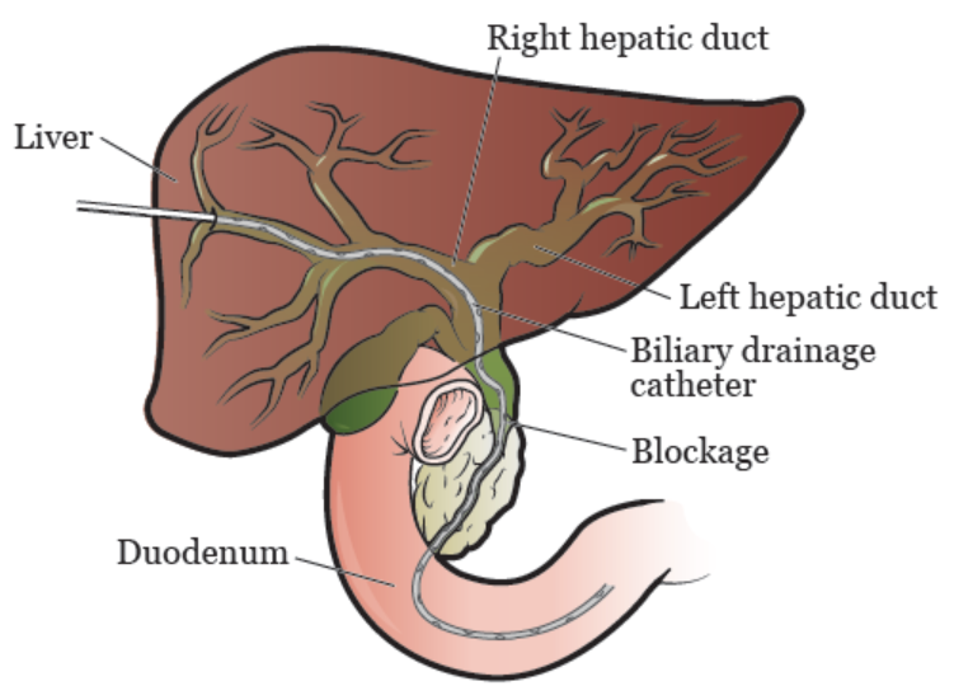
Figure 2. A PTBD Catheter Crossing a Blockage into the Duodenum [5].
1.2 Complications of Long-Term Biliary Drainage
Long-term biliary catheters fail in three main ways:
Blockage: Bile tends to crystallize and form deposits and sludge, especially since it flows very slowly, which contributes to the catheter blocking over time. The accumulation of bacteria on the catheter’s wall, known as biofilm formation, is another contributing factor. Other factors include the reflux of intestinal contents, such as food, from the duodenum into the catheter. At Singapore General Hospital (SGH) in 2024, 35% of catheter exchanges were for blockage before the planned three-month exchange.
Infection: Blockage and infection are related complications. Slow-moving or still bile, because of blockage, promotes bacteria multiplication and causes infection. 13.2% of patients with PTBD catheters experience major infection-related complications [7].
Dislodgement: As depicted in Figure 3, the catheter has external tubing. It functions to allow bile to also drain outside of the body into a bag, which is important in cases of severe biliary obstruction. However, the external tubing may catch onto objects such as furniture, or patients may pull on it, resulting in the catheter dislodging. The stitches that anchor the catheter to the body also loosen over time. Lastly, the liver has been described by doctors to be a mobile organ that moves with breathing (see Interview 7 in Appendix B), further contributing to catheter dislodgement.
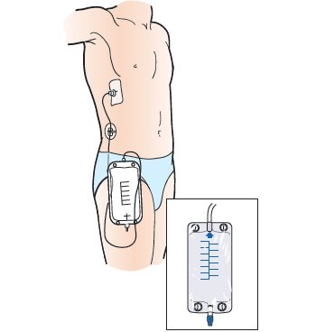
Figure 3. PTBD Catheter’s External Component [5].
1.3 Impact to Patients
Some patients (reported to be 34.2% [7]) experience bile leakage around the catheter, which can be caused by catheter blockage and dislodgement. Bile causes severe skin irritation, and is a foul-smelling liquid. Thus, leakage impacts patient comfort and quality of life. In addition, when complications occur and bile drainage is impacted, chemotherapy must be paused, sometimes even up to two months.
Furthermore, each time a patient experiences such complications with their PTBD catheter, they need to urgently go back to the hospital and undergo an unplanned catheter exchange procedure. At SGH specifically, each exchange costs patients SGD 549, or SGD 2,759 if admitted [8], on top of SGD $3,868 for the first insertion [9]. Therefore, unplanned interventions due to blockages result in significant costs accumulating for patients. Three planned exchanges a year already cost ∼SGD 1,650, and one complication every six months, which is a conservative estimate, adds about SGD 1,100 every year. This results in a significant burden for patients (see Interview 13 in Appendix B).
1.4 Problem Statement
Patients on long-term percutaneous biliary drainage return to the hospital unexpectedly, and undergo unplanned interventions, because their catheter blocks or dislodges, or they experience an infection.
1.5 Need Statement
A way for interventional radiologists to reduce catheter-related complications in patients requiring long-term percutaneous biliary drainage, including decreasing obstruction (blockage) rates from 35% (see section 1.2) to below 20%, to minimize unplanned re-interventions, while improving patient comfort and quality of life.
Blockage was chosen as our focus because of the results from the survey that we distributed to interventional radiologists. The survey asked respondents to score problems associated with the PTBD catheter based on their significance to the respondent: blockage scored highest at 8, with dislodgement scoring 6 and infection scoring 5. Blockage also appears to be more frequent than dislodgement, based on data provided by a nurse at SGH (see Interview 15 in Appendix B).
1.6 Current Workarounds and Their Gaps
Interventional radiologists use two workarounds today. The first is flushing: using a syringe to push saline through the catheter, with the aim of clearing bile deposits and maintaining catheter patency. Nurses can teach patients or caregivers to do this at home regularly. From our interviews with healthcare professionals, it appears that patients whose PTBD catheters are regularly flushed tend to not experience catheter blockage before the next planned exchange.
However, the evidence for flushing’s efficacy is primarily anecdotal, and a clinical trial registration report states that there is no scientific evidence for or against flushing PTBD catheters [10]. In addition, if flushing is performed incorrectly, it can cause infection in patients. Thus, advice on how often to flush varies widely, with some healthcare professionals not recommending it to patients at all (Table 1).
Table 1. Flushing Advice From Our Interviews.
| Source | Advice |
|---|---|
| Nurses at SKH | Once a week |
| SGH department guidelines | 2 to 3 times a week |
| Doctors in Korea and at SGH | 1 to 2 times a day |
| Manufacturer guidelines | Once a day |
| Doctors at Duke University | Twice a day |
| Doctors in Australia and Thailand | Do not recommend for patients to do themselves at home |
The second workaround is that doctors sometimes cut extra side holes in the catheter by themselves when they deem the number and/or position of pre-existing holes to be inadequate. This is problematic because the sharp edges from the cutting can scratch patients’ bile ducts, causing bleeding. Doctors may also accidentally cut the thread inside the catheter used to lock it in position, wasting the catheter. Lastly, adding additional holes weakens the catheter. One doctor told us that he hates making additional holes (see Interview 12 in Appendix B), and doctors commonly request catheter manufacturers to add more holes (see Interview 11 in Appendix B).
1.7 Value Proposition
We aim for our solution to reduce the occurrence of PTBD catheter-related complications, especially blockage. Subsequently, patients would have less unplanned catheter exchanges, allowing them to avoid the associated financial cost. They would have improved quality of life, not only through fewer pauses in chemotherapy and less bile leakage, but we also aim to reduce their burden of caring for the catheter at home. Meanwhile, doctors have also described that unplanned procedures impact them, due to the associated resource burden (e.g. having to work extra hours in day; see Interview 23 in Appendix B). Thus, doctors are also expected to benefit from our solution.
2. Design Specifications
The D-HIP team used the need statement stated in section 1.5 to develop need criteria for our solution. Must-haves (Table 2) are criteria any solution must meet to be considered a valid solution, while good-to-haves (Table 3) would make a solution stronger.
Table 2. Must-Have Need Criteria.
| # | Must-have criterion | Reason |
|---|---|---|
| 1 | Insertion and maintenance procedures should not raise infection-related complications above 13.2% | 13.2% is the reported rate [7]. Better drainage is not worth extra risk to patients. |
| 2 | Rate of catheter exchanges due to blockage should not exceed 35% | 35% is the rate in SGH in 2024. |
| 3 | Fits current insertion and maintenance procedures | Valued by IRs in our survey; current catheters allow it |
| 4 | At least as secure in place as current PTBD catheters | Dislodgement is already a complication |
| 5 | No more discomfort than current PTBD catheters | Sutures and dressings already irritate the skin and affect daily activities e.g. sleeping and exercise |
Table 3. Good-to-Have Need Criteria.
| # | Good-to-have criterion | Reason |
|---|---|---|
| 1 | Works for any anatomy | Doctors sometimes cut extra side holes in PTBD catheters. This can be due to the need to accommodate specific anatomies. As described in section 1.6, cutting additional holes has disadvantages, so we aim to avoid this. |
| 2 | Rate of catheter exchanges due to blockage is reduced to 20% or lower | Meaningful change as determined by discussions with our clinical and industry mentors |
| 3 | Adds no more than SGD 549 per 3 months to patient costs | Our solution aims at reducing unplanned catheter exchanges for patients. If our solution is more expensive than an additional catheter exchange due to a complication, patients would be unlikely to adopt our solution. |
| 4 | Simple bedside care that patients/caregivers can learn from one demonstration and takes less than 20 minutes a day | Flushing is not always recommended due to the risk of being performed incorrectly and causing infection. |
| 5 | Functions for 6 months, instead of the current 3-month duration | Ideal if longevity could match that of metal stents; would further bring down patient costs |
| 6 | Costs the hospital no more than USD 200 per piece | Estimated price of current PTBD catheters [11], requires further confirmation |
| 7 | Secure enough to bring leakage below 34.2% | Reported leakage rate [7] |
3. Concept Development and Selection
3.1 Root Causes and Idea Generation
We generated ideas individually by brainwriting, then in a group brainstorm on 21 October. The ideas fell into three groups:
Prevent deposits: coatings, a low-adhesion lining, a thin coil-reinforced wall for a larger lumen, a lock solution.
Constant bile movement: a rifled lumen, angled side holes, a duckbill valve with a securement balloon, a hybrid stent-catheter.
Clean deposits out: automated flushing, a peelable catheter, a replaceable liner, microrobots.
We ruled out coatings early. They have been tried: they add substantial cost, and bile proteins coat the surface and cover them [12].
3.2 Concept Screening and Selection
We scored each concept against every need criterion and took the average, and then scored them on technical feasibility as well (Table 4; full matrices in Appendix A).
Table 4. Concept Screening Scores.
| Concept | Need criteria (0 to 2) | Feasibility (0 to 2) | Outcome and Rationale |
|---|---|---|---|
| Automated flushing + modified catheter geometry (e.g. rifled lumen) | 1.1 | 1 | Taken forward Flushing is already a known maintenance procedure for PTBD catheters: important for solution adoption |
| Hybrid stent | 1.0 | 1 | Ruled out for now
|
| Nested (peelable) catheter | 1.0 | 1 | Ruled out for now
|
| Angled side holes | 0.7 | 2 | Tested first Feasible, can be included as an additional feature to main solution |
| Microrobot cleaners | 0.9 | 0 | Ruled out for now Technology not available yet |
| Duckbill valve [13], [14] + balloon | 0.7 | 1 | Not tested yet
|
We tested the rifled lumen aspect of the first concept in Table 4, as well as the angled side holes concept, first. Both are quick to design, print and test, and can be added to other solutions.
The tests and the flow analysis in Chapter 6 showed that normal bile flow has too little flow and pressure for any geometry to work with, while a flush gives 100 to 300 times more pressure drop. In addition, Chapter 1 showed that flushing helps, but is not standardised. We therefore selected automated flushing as our main concept, paired with catheter geometry changes such as a rifled lumen and angled side-holes. We are also considering adding the duckbill valve and balloon concept, but these have not been tested yet.
Table 5 links each concept to the root cause it targets.
Table 5. Root causes and the concepts that target them.
| Root Cause of Problem | Concept |
|---|---|
|
Rifled lumen; automated flushing |
| Blocked side holes | Angled side holes; automated flushing |
| Food reflux from the duodenum | Duckbill valve |
| Dislodgement | Securement balloon |
| Flushing is not standardised | Automated flushing |
4. Our Selected Concept and its Novelty
4.1 Research and Innovation Gap
Flushing is common, but there is no evidence for or against it in PTBD catheters [10] and no agreed schedule (Table 1). Catheter geometry has barely changed since Ring et al. described a multi-side-hole PTBD catheter in 1979 [16], and current designs are not built for the flow during a flush. The main alternative, a metal stent, lasts about six months with no external tube, but it cannot be flushed and is hard to rescue once blocked. No current option offers both a good quality of life and long-term drainage that can be maintained.
We found no published work that tests a standardised, automated flush together paired with catheter geometry changes, which is our chosen direction. Automated flushing has been described in patents: Goswami covers a drainage device that flushes on a schedule and lists biliary fluid among its uses [17], and Balesh et al. describes a pump and controller that flush an abscess drain when they detect an occlusion [18]. Our work differs in three ways:
Our flush will be user-confirmed and syringe-loaded. The device sits where the three-way stopcock sits today and uses the prefilled saline syringes that patients already receive.
Our catheter geometry will be specifically designed for flow during a flush, unlike the above patented designs which do not modify catheter geometry.
We will test the two together, as the 2x2 comparison in Section 4.2.
4.2 Hypothesis
We expect a standardised automated flush with modified catheter geometry to keep the catheter open and functioning the longest. The flush supplies the pressure the geometry needs, and automation makes every flush the same. We will test all four combinations (Table 6).
Table 6. The 2x2 comparison Planned for Semester 2.
| Standard catheter | Modified geometry | |
|---|---|---|
| Manual flush | Today's practice (baseline) | To test |
| Automated flush | To test | Predicted best |
4.3 Selected Concept Design
The automated flusher replaces the three-way stopcock between the catheter and the drainage bag (Figure 4). The user attaches a prefilled saline syringe and presses confirm, and the device delivers a pulsed flush before bile drains again. Table 7 sets out what the flusher must do, traced to the need criteria. Our main open design questions are how the device directs flow and how it manages infection risk, since a syringe is still connected.
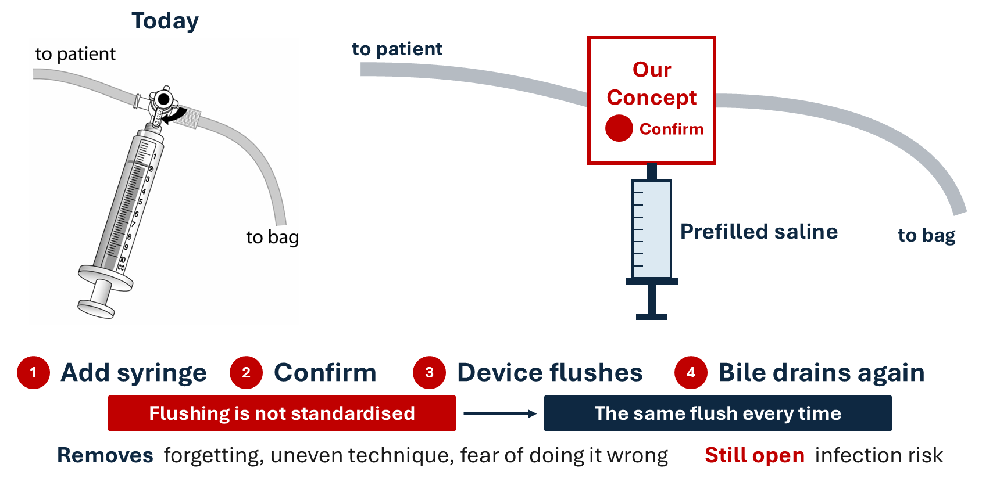
Figure 4. Today's manual flush through a three-way stopcock (left) and the automated flusher concept (right).
Table 7. Flusher requirements traced to the need criteria.
| Flusher requirement | Need criterion |
|---|---|
| Delivers the same volume and pulse every time, starting from the 5 mL pulsatile flush nurses teach currently | Must-have 2; good-to-have 2 |
| Limits flush pressure | Must-have 1 |
| Adds no new opening to the drainage path; the syringe connects as it does today | Must-have 1 |
| Keeps drainage to the bag and external access for aspiration | Must-have 3 |
| Small enough to sit where the stopcock sits | Must-have 5 |
| Uses the prefilled saline syringes patients already receive [19] | Good-to-haves 3 and 4 |
5. Prototypes and Test Methods
5.1 Printed Test Parts
Justin modelled four test parts in CAD and 3D printed them. Each is 28 mm across with a 20 mm bore and is 100 mm long. Each pair differs in one feature: orthogonal against angled side holes (Figure 5), and a smooth against a rifled bore (Figure 6). The parts are far wider than a catheter on purpose, so we could change and reprint them quickly. We made one part per design.
Angling a side hole gives a larger opening without adding holes and lines the hole up with the flow, but the path through the wall is longer, which adds resistance. Hence, this concept was imperative to test.
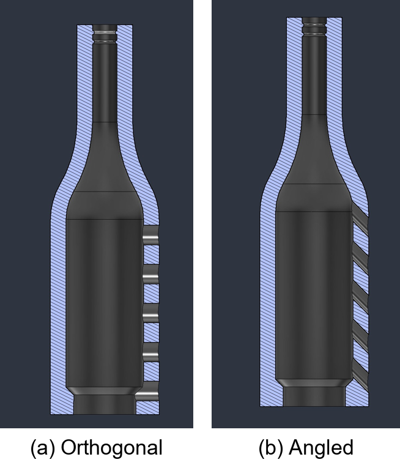
Figure 5. Cross sections of the side-hole test parts.
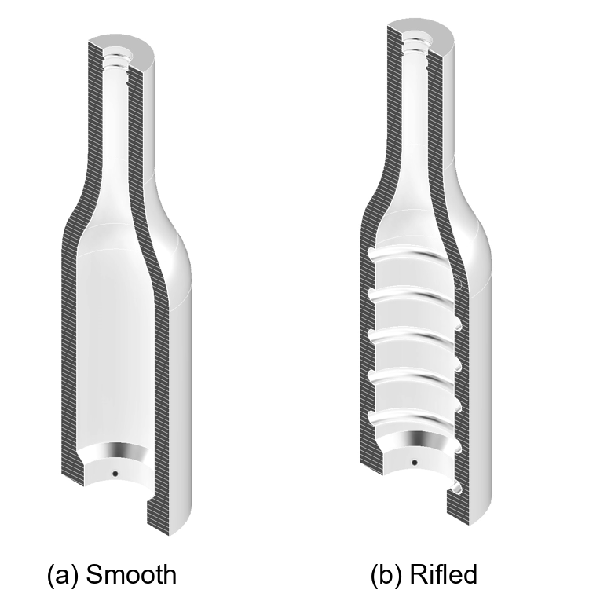
Figure 6. CAD of the smooth and rifled test parts.
5.2 Side-Hole Force Test
Question: Does angling the side holes make it easier to push fluid out through them?
For each part in Figure 5, we sealed one end and filled it with water. We pushed out 5 mL using a syringe, while placing a force-sensitive resistor (FSR) between the index finger and the syringe plunger (Figure 7). It was wired as a voltage divider to an analogue input on an Arduino Uno, which printed the reading to a laptop. The sensor is uncalibrated, so readings have no units. We used them only to compare the two designs.
We recorded and compared the peak reading in 6 trials per part (Figure 10). Only the side-holes’ angle changed between the two printed parts, with all else the same.
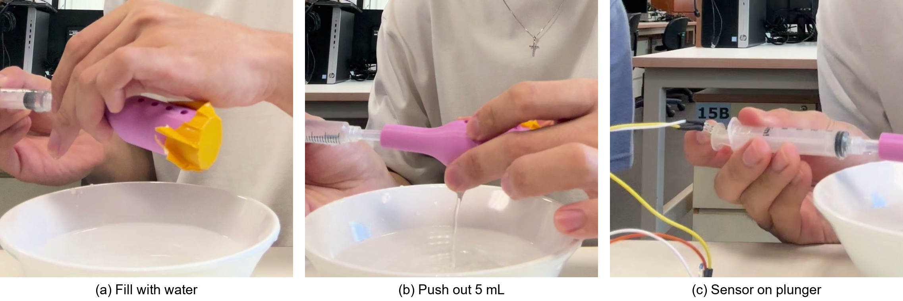
Figure 7. Side-hole force test.
5.3 Rifled Lumen Drain Test
Question: Does rifling change how water drains through the part?
We first timed water draining under gravity with a stopcock attached. Then we suspected the stopcock could be cancelling any swirl, so we removed it. We sealed the end with a finger, filled the part and let go (Figure 8).
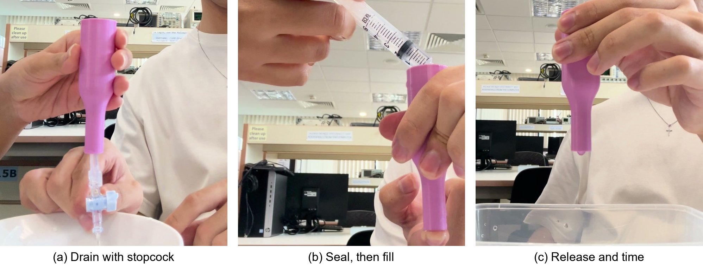
Figure 8. Rifled lumen drain test.
5.4 Flow Model
We started designing and building a flow model before choosing concepts, because any concept would need such an apparatus for testing it. It is a 2D copy of the biliary system (Figure 1): a main duct that splits into two branches, with a side port for injecting fluid (Figure 9). The first model uses tubing, Y-connectors, stopcocks, and syringes. We will fill it with a thick fluid containing particles, starting with satay sauce as a cheap first step and then simulated bile. When we test potential solutions, we will take three measures:
Outflow: fluid weight drained by gravity in 60 seconds (adapted from a catheter manufacturer's bench test)
Deposits: the amount built up over a set time.
Flush recovery: the outflow regained after a flush.
To test catheter properties, we will measure pull-out, insertion and tracking force (defined in Appendix E).
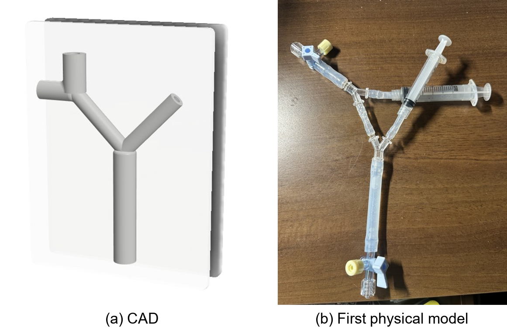
Figure 9. The Flow Model.
6. Results and Analysis
6.1 Side Holes
Angled holes needed less peak force to push out 5 mL (Figure 10). The mean reading was 463.7 for angled holes and 514.7 for orthogonal holes, with six trials each (Appendix C). A two-sided Welch t-test gives t = 4.1, p = 0.002, indicating a statistically significant difference. Less force for the same volume means less resistance through the angled holes. The larger opening and better alignment with the flow appear to outweigh the longer path through the wall.
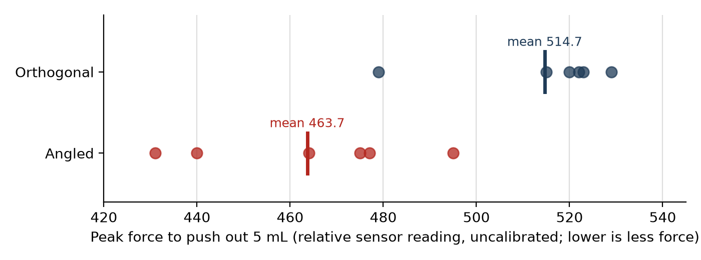
Figure 10. Peak force readings for six trials per design. Bars mark the means.
We treat this as a pilot result. The sensor is uncalibrated, so we do not claim a percentage difference. Other limitations of this test include: the syringe was pressed by hand, there was one part per design, and the parts were oversized and filled with water instead of bile-like fluid. The test also pushes fluid out through the holes, while in a catheter bile mainly enters through them. Hence, this result gives us a direction, and we will repeat this test with better parts and testing methodology.
6.2 Rifled Lumen
With the stopcock attached, there was no clear difference between the parts. Without it, each part emptied in about one second, which was too fast to time by hand. The result is inconclusive.
The part's length is about 2.5 times its bore, while a catheter's is about 200 times, so our part is about 80 times shorter relative to its width. We now realise that such a short length may not allow spiral flow to develop in the first place. Hence, our next test parts will be thinner and longer.
6.3 Flow Analysis
The Reynolds number, Re = ρvD/μ, shows whether flow is smooth (laminar) or turbulent. For normal bile flow in a catheter, Re is about 3 to 5, which is laminar flow, so grooves are unlikely to create a swirl on their own. During a 5 mL flush, Re rises to about 600 to 1,600. That is far higher but still laminar (Figure 11). For laminar flow, the pressure drop scales with flow rate, so a flush gives a pressure drop about 100 to 300 times that of normal bile flow (Appendix D).
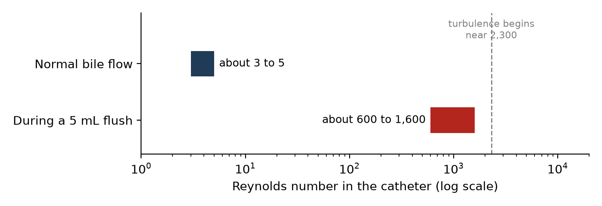
Figure 11. Reynolds number during normal bile flow and during a flush
So a geometry change should do most of its work during a flush. A manual flush happens only when someone remembers to do it and does it properly. This is the reason we paired geometry with an automated flush.
7. Limitations and Plan
7.1 Limitations
Four limitations remain, and each has a plan (Table 8).
Table 8. Limitations and Plans.
| Limitation | Effect | Plan |
|---|---|---|
| Parts too wide and short | Rifled test inconclusive | SLA print thinner, longer parts with a lab at Duke-NUS |
| Syringe pressed by hand, in a fixed order | Technique and order can bias readings | A retort stand holds the syringe, a weight pushes it, and we alternate the order |
| Water only | No deposits; bile is thicker | A thick fluid with particles, then simulated bile |
| No flusher yet | Hypothesis untested | Build flusher version 1 |
7.2 Plan
Five assumptions remain untested:
An automated flush offers meaningful benefits over a standardised manual one
Flush can stay within a safe pressure range, otherwise automated flushing will not reduce infection risk
Rifled lumen can be made without weakening the catheter
Users will accept the external automated flushing device
Benefit justifies the cost
D-HIP has 5 main phases: Clinical Discovery, Commercial Discovery 1, Concept Design, Concept Development, and Commercial Discovery 2. We have finished the first two and are in Concept Design, which ends with finalizing prototype specifications. Table 9 maps the remaining stages to our work and to the above untested assumptions.
Table 9. Remaining D-HIP stages.
| Stage and Timing | Work | Questions To Be Answered |
|---|---|---|
| Concept Design (end of Semester 1) |
|
|
| Concept Development (December and Semester 2) |
|
|
| Commercial Discovery 2 (Semester 2) |
|
|
8. Reflections
Justin
Early on I realised that most of the people we design for are in palliative care, and that a good catheter would outlast its patient. That was a sad thing to accept. It changed how I planned the solution. That shifted my focus to be on whether patient could live with it comfortably and ease into their treatment, as well as whether it drained successfully. Watching a biliary exchange at SGH, and hearing the doctors explain what they were doing and why, is something I do not think I would have had outside D-HIP. I was also surprised how slowly these devices change, and how little research goes into problems that don't promise much revenue. At Terumo, I learned to slow down and phrase my questions clearly for engineers whose first language isn't English, and I still learned a great deal from them. Watching procedures, talking with clinicians and being invited to conferences were things I never expected as a mechanical engineering student.
Tanya
This semester, I have learnt to be better at tolerating uncertainty and not having all the answers immediately. As we began learning about the problems associated with biliary drainage, I found it challenging to decide on what specific problem we should solve, and what solution direction, out of endless possibilities, to pursue. Decisions were made, but not without a lingering feeling of uncertainty. Every time I obtained answers to my initial questions, I found myself grappling with even more questions and confusions. At this stage of our project, I realise there is so much that I still do not know, whether it is aspects of the problem or engineering principles or techniques. Although I am nervous, I am excited as well, for I have learnt that it is alright to focus on answering one question at a time! I will continue to try my best and do what I can.
References
[1] National Cancer Institute, “Definition of biliary bypass - NCI Dictionary of Cancer Terms - NCI.” Accessed: Oct. 29, 2026. [Online]. Available: https://www.cancer.gov/publications/dictionaries/cancer-terms/def/biliary-bypass
[2] Cleveland Clinic, “What Is Bile?,” Cleveland Clinic. Accessed: Nov. 12, 2026. [Online]. Available: https://my.clevelandclinic.org/health/body/what-is-bile
[3] Cleveland Clinic, “Biliary Drainage,” Cleveland Clinic. Accessed: Aug. 12, 2026. [Online]. Available: https://my.clevelandclinic.org/health/treatments/17763-biliary-stent
[4] Cleveland Clinic, “Duodenum: What It Is, Function, Location & Concerns,” Cleveland Clinic. Accessed: Nov. 12, 2026. [Online]. Available: https://my.clevelandclinic.org/health/body/duodenum
[5] Memorial Sloan Kettering Cancer Center, “About Your Biliary Drainage Catheter | Memorial Sloan Kettering Cancer Center,” Memorial Sloan Kettering Cancer Center. Accessed: Aug. 20, 2026. [Online]. Available: https://www.mskcc.org/cancer-care/patient-education/about-your-biliary-drainage-catheter
[6] JDMeditech, “PTBD Catheter for Biliary Drainage – Safe & Effective Solution,” jdmeditech. [Online]. Available: https://www.jdmeditech.com/ptbd-catheter-for-biliary-drainage-safe-effective-solution/
[7] B. Sahoo et al., “Clinical outcomes of percutaneous biliary drainage and quality of life assessment: a prospective observational study,” Abdom. Radiol., vol. 51, no. 2, pp. 939–953, Feb. 2026, doi: 10.1007/s00261-025-05140-2.
[8] Ministry of Health Singapore, “SF701B - Bile Ducts, Catheter Blockage, Imaging Guided Catheter Change / Catheter Adjustment / Check Cholangiogram | Ministry of Health,” Ministry of Health. Accessed: Oct. 29, 2026. [Online]. Available: https://www.moh.gov.sg/managing-expenses/bills-and-fee-benchmarks/cost-financing/tosp-sf701b-bill-information/
[9] Ministry of Health Singapore, “SF706B - Bile Ducts, Various Lesions, Percutaneous Transhepatic Cholangiography And Drainage Catheter Insertion (PTC And Drainage),” Ministry of Health. Accessed: Nov. 04, 2026. [Online]. Available: https://www.moh.gov.sg/managing-expenses/bills-and-fee-benchmarks/cost-financing/tosp-sf706b-bill-information/
[10] A. Moelker, “Flushing of Internalized Percutaneous Transhepatic Biliary Drainage Catheters,” clinicaltrials.gov, Clinical trial registration NCT04915703, Aug. 2022. Accessed: Nov. 13, 2026. [Online]. Available: https://clinicaltrials.gov/study/NCT04915703
[11] Argon Medical, “Argon Medical Catheter Biliary Drainage Skater 12Frx40Cm 5/Bx - 755312 — Serfinity Medical,” Serfinity Medical. Accessed: Nov. 13, 2026. [Online]. Available: https://serfinitymedical.com/products/argon-medical-catheter-biliary-drainage-skater-12frx40cm-5bx-755312040-1272857
[12] C.-I. Kwon and G. A. Lehman, “Mechanisms of Biliary Plastic Stent Occlusion and Efforts at Prevention,” Clin. Endosc., vol. 49, no. 2, pp. 139–146, Mar. 2016, doi: 10.5946/ce.2016.024.
[13] POV Control Valve Manufacturers, “What Is a Duckbill Check Valve? Design, Functionality & Application.” [Online]. Available: https://pov-valve.com/control-valve/what-is-a-duckbill-check-valve-and-how-does-it-work/
[14] Vernay, “Duckbill Check Valve Design Guide: Opening Pressure, Reverse Flow Prevention and Material Selection - Vernay.” [Online]. Available: https://vernay.com/resources/duckbill-check-valve-design-guide-opening-pressure-reverse-flow-prevention-and-material-selection/
[15] NHS, “Types of urinary catheters,” nhs.uk. Accessed: Nov. 14, 2026. [Online]. Available: https://www.nhs.uk/tests-and-treatments/urinary-catheters/types/
[16] E. J. Ring, J. W. Husted, J. A. Oleaga, and D. B. Freiman, “A Multihole Catheter for Maintaining Longterm Percutaneous Antegrade Biliary Drainage,” Radiology, vol. 132, no. 3, pp. 752–754, Sep. 1979, doi: 10.1148/132.3.752.
[17] G. K. Goswami, “FLUSHABLE DRAINAGE DEVICE AND 5,443,453 A 8/1995 Walker METHOD OF USE,” 9,814,866 B1, Nov. 14, 2017 [Online]. Available: https://image-ppubs.uspto.gov/dirsearch-public/print/downloadPdf/9814866
[18] E. R. Balesh, M. I. Pena, L. Q. Vu, and R. J. G. Bautista, “Systems and Methods for Percutaneous Drainage,” Jul. 21, 2022 Accessed: Nov. 13, 2026. [Online]. Available: https://patentscope.wipo.int/search/en/detail.jsf?docId=WO2022155252
[19] Stanford Healthcare, “biliary-drain-patient-discharge-education.pdf,” stanfordhealthcare.org. Accessed: Nov. 14, 2026. [Online]. Available: https://stanfordhealthcare.org/content/dam/SHC/clinics/interventional-radiology-clinic/docs/biliary-drain-patient-discharge-education.pdf
Appendix A: Concept Screening Matrices
Scores for Need Criteria (in Tables 2 and 3):
2: likely exceeds the criterion
1: likely meets it
0: likely does not meet it
Table 10. Must-have criteria scores
| Criterion | Nested (peelable) catheter | Automated flushing + rifled lumen | Angled side-holes | Duckbill valve + balloon | Microrobot cleaners | Hybrid stent-catheter |
|---|---|---|---|---|---|---|
| M1 Complications at or below 13.2% | 1 | 1 | 1 | 1 | 1 | 1 |
| M2 Blockage below 35% | 2 | 2 | 1 | 2 | 2 | 1 |
| M3 Fits current procedures | 1 | 2 | 2 | 1 | 0 | 1 |
| M4 At least as secure | 1 | 1 | 1 | 1 | 1 | 1 |
| M5 No extra discomfort | 1 | 1 | 1 | 1 | 1 | 1 |
| Average | 1.2 | 1.4 | 1.2 | 1.2 | 1.0 | 1.0 |
Table 11. Good-to-have criteria scores
| Criterion | Nested (peelable) catheter | Automated flushing + rifled lumen | Angled side-holes | Duckbill valve + balloon | Microrobot cleaners | Hybrid stent-catheter |
|---|---|---|---|---|---|---|
| G1 Works for any anatomy | 0 | 0 | 0 | 0 | 1 | 0 |
| G2 Blockage below 20% | 1 | 1 | 0 | 0 | 2 | 2 |
| G3 Patient cost (not yet scored) | ||||||
| G4 Simple bedside care | 2 | 2 | 1 | 1 | 1 | 1 |
| G5 Drains 3 to 6 months | 1 | 1 | 0 | 0 | 0 | 2 |
| G6 Hospital cost (not yet scored) | ||||||
| G7 Leakage below 34.2% | 0 | 0 | 0 | 0 | 0 | 0 |
| Average | 0.8 | 0.8 | 0.2 | 0.2 | 0.8 | 1.0 |
The averages from Table 10 and 11 were further averaged to result in the values in Table 4.
Scores for Technical Feasibility, used to fill Table 4:
2: concept has a reasonable risk profile in this area
1: concept has problematic issues in this area that will require extra time and resources to address, but can potentially be managed
0: concept has problematic issues in this area that could halt the project
Appendix B: Sources of Insight
Notes from Interviews with Stakeholders
Senior Consultant, Rehabilitation Medicine, SGH, 6/8/26
he thinks problem is not that common, but is important
need statement says “biliary drainage” → make sure to clarify
how long biliary drainage required
how long is catheter is needed
for what conditions
for what situations is biliary catheter needed
make sure you understand bile and the bile duct
location
possible complications
e.g. bile leakage into abdominal cavity can be detrimental
how does bile flow?
why is bile important?
how are catheters secured in general, examples:
urinary catheter
cardiac stents
kidney catheter → most closely related to biliary catheter
used when blockage between kidney and bladder
catheter inserted into kidney to drain urine → called percutaneous nephrostomy (PCN) catheter
need to ensure long-lasting material of catheter
what has been done before to try and solve the problem
there is a procedure called Percutaneous transhepatic biliary drainage (PTBD) → check if need statement is referring to this
Interventional Radiology Senior Consultant, Gold Coast University Hospital, Australia, 22/8/26
uses biliary catheter from Cook and BD
there are various indications, with 2 categories:
malignancy
stones/benign
with malignancy he has observed:
biliary obstruction
bleeding that results in infection
first choice is always endoscopy
in his hospital, he sees 5-10 biliary drainage cases in a month
"yes complications happen, but is it something that would happen because of the disease progression anyway, or can the catheter be blamed"
he seems to think that complications are inevitable due to disease progression, and the design is not really to blame
main solution right now for complications: exchange
no radiopaque marker
very confusing for him
radiopaque markers would be seen by x-ray
right now only plastic, which appears very faint in x-ray
ideally wants side holes before and after obstruction; some colleagues put holes manually
cutting holes themselves reduces catheter’s structural integrity and risks cutting the wire inside the catheter
problem of suboptimal placement: patient has to come again
ideal outcome: external drainage bag has less output, so he knows bile is going in duodenum
having bag fill easily indicates suboptimal drainage
metal stent: palliative procedure for those with cancer
sometimes patients with cancer can survive for more than 2-3 years
not dependent on age
depends more on fitness
metal stent ends up getting blocked, have to drain again
sometimes many lesions in liver, cure by just relieving the lesions rather than inserting biliary drainage system
changes catheter every 2-3 months: regular protocol
bile is alkaline so it corrodes the plastic, meanwhile stents are made of metal and are more durable
flushing is done at his hospital
if in hospital, flushing 1x daily
if at home, no flushing due to infection risk
patients do present with biliary sepsis
if there is complication such as obstruction after discharge, they come back usually a few days after, such as around a week
Interventional Radiology Resident, SGH, 22/8/26
never had issues with obstructions with PTBD personally
catheters changed frequently enough: every 2-3 months
looks at drain output to check catheter’s function
throughout the entire IR department in SGH, every 3 months they see a total of 120-150 PTBD cases
in his own experience, he has done only 5 new insertions, usually only does changes
“dislodgement is the more important issue (than obstructions)”
can be due to catheter catching onto something or suture not tight
patients will call hotline
in a week 5-10 PTBD routine changes
90% planned changes
malignant patients usually have permanent stents that provide better QoL, but if prognosis > 6 months, stents end up occluding which then requires PTBD
Interventional Radiology Nurse, SGH, 22/8/26
catheter has a lot of sediments
catheter needs continuous monitoring and continuous care, but it is not there
it is difficult to see output continuously as a nurse, she is busy
maybe would be good to educate ward doctors
not trained to recognize early signs of obstruction e.g. using drain output, clinical presentation
after operation, patient is in general surgery and is monitored by specialist nurse and oncology nurse who teach patients and caregivers
NCCS nurses do not teach flushing since it is difficult to manage
flushing technique is different between departments
only certain nurses, by rank, can perform flushing
IR nurses are not really allowed to flush catheters
mainly hepato-pancreato-biliary and NCCS nurses
one time patient came back just the next day, whole tube crusted
if doctors set up framework, it would help nurses
when patients taught to flush, come back unexpectedly usually only after more than 1 year
but no evidence that flushing actually works
Interventional Radiologist, Golden Jubilee Medical Center, Thailand, 22/8/26
Interventional Radiologist, Siraji Hospital Mahidol University, Thailand, 22/8/26
many doctors can treat biliary disease: IR, internal medicine
IR not patient’s primary physician (even in Singapore this is the case)
first priority ERCP, then PTBD
routine exchange every 3-4 months, “genuinely no problem”
number of cases
Dr. A: malignant new cases 20 a month
Dr. B: 1-4 a month, mostly malignant
benign more complicated, have to treat for long time, gastroenterologist cannot do anything, but malignant pass away within 3 months
companies: Argon, Bioteq
patient and caregiver need to care, but if poor SES, recommend to come to hospital 2x a week
do not recommend flushing: sometimes not sterile, results in infection
ERCP has real-time scope, wants to have something similar for PTBD, would be able to have easier route for breaking up stones
Vietnam: internal medicine/endoscopists very strong
do not always replace catheter upon complications, have to evaluate with cost
rarely see the problem of obstruction
1-2 cases in entire life of food stuck inside
helpline for patients:
LINE account
can contact doctor, nurse, technologist
sometimes have to insert more than one catheter
while inserting catheter, patients hold breath, which results in liver position moving
benign: cholangioplasty
stent is a foreign body, it is not suitable, it is very easy to obstruct
Dr. A’s main problems with catheter:
kinking: results in blockage/bile leak/smell
string: try to pull out, but string stuck inside patient's body
foreign body retention
pigtail locking mechanism thread
want to make 3-4 months duration (for exchange) longer
Dr. B says the above 3 problems are not a problem for him
Interventional Radiologist, South Korea, 22/8/26
at least 20 PTBD procedures a month
almost all procedures successful
challenge during procedure: puncture
challenges during after procedure care:
bleeding (of portal vein, very uncommon)
leakage due to loosening/ascites
solution: change catheter
sometimes retrievable stent
no schedule for changing catheter
when stents used for malignant cases, blockage at around 6 months
solution: just keep PTBD, change every few months
but easily blocked + food reflux
patients do not live for more than 2-3 years
only uses catheter from Cook Medical:
flexible
flexibility needed because liver is a very mobile organ (e.g. changes position during respiration)
if hard catheter → dislodgement
Interventional Radiologist, South Korea, 22/8/26
usually exchange every 2-3 months: do X-ray + cholangiogram, then change
dislodgement:
is a malfunction
movement is more in right side PTBD → more dislodgement
gender: male patients use more abdominal muscles when breathing + physical movement
PTBD approach angle also important
most important is function preservation
occurrence less than 10% because generally those who are malignant are relatively immobile → dislodgement not common
biliary cast syndrome:
bile duct easily blocked
solution: make side holes + more irrigation
food inside catheter/stent very easily
larger size stent → less food material inside
12 mm (not in SGH): most effective according to him, instead of valve etc
hepatologists teach patient to irrigate catheter 3-5 times daily using saline
drain faster and more smoothly
“irrigation most important thing”
doctors flush hard (when obstructions encountered), but patients instructed to flush gently (to prevent trauma)
number of procedures of biliary drainage is 2 a day, but mostly laparoscopic cholecystomy (not used in elderly)
“if possible, surgery is the best”
“PTBD is the best drainage duct”
Senior Territory Manager, Merit Medical, Singapore, 22/8/26
product called Resolve
locking system: suture left inside
catheter placement affects blockage
to unblock catheter, reposition
has holes throughout catheter
distributor: Singmed
it is a general purpose catheter
Clinical Specialist, Argon, Singapore, 22/8/26
explanation by Dr. Alfred:
initial:
only external
3-piece system
pigtail design catheter
metal stiffener allows to straighten catheter
sharp needle
after about 3-5 days, change to next evolution:
external-internal
black radiopaque marker denotes where side holes start
larger → if smaller, more susceptible to obstruction
rotated position of holes helps distribute them
holes should be in liver only
no holes in peritoneal cavity otherwise bile will drain into peritoneal cavity → serious complication
position needs to be correct
can make holes yourself, but need to be careful to not cut string
kinks very rare in design
not 3-piece:
no metal stiffener, only plastic
for simple exchange (when flushing will not work)
less traumatic for patient, but hollow: debris can go inside
metal stiffener only for first insertion since need to open up bile duct
correct placement important, but catheter can move → infection and allergy
Argon has securement device to prevent catheter movement
material: TPE, not plastic
low profile: less infection
NUH and TTSH is already using, but SGH is not
in SGH, Dr. Alfred says he usually does stitching to tie the catheter down, but this sometimes causes allergy and pinching
common feedback Argon received: increase number of side holes
but it is difficult to change:
regulatory requirements have become very strict
expensive to change
locking mechanism (with string): stable and easier to lock
removing catheter: cut string, pigtail unravels, put wire inside, pull out
can consider new mini loop for solution
SKATER: all-purpose drain
but biliary SKATER has more holes; monthly 100 supplied in Singapore
difference between Argon and Cook’s catheters:
Argon: less side holes but bigger
Cook: more side holes but smaller
smaller and fewer holes leads to increased obstruction risk
larger and more holes leads to structural weakness
Clinical Support and Sales, Ex-Argon, 27/8/26
her role: clinical support
training junior doctors
how to support/insert/maintenance
it is a real problem: from a % perspective may not be so much, but for doctors it is a lot
malignant biliary obstruction patients typically require longer-term drainage and experience more complications than benign cases (more blockage + sepsis)
benign cases: much higher rate of recovery
Brandon: when patient presents, the first step is to check for kinking using x-ray
Latika: problems are blockage, leakage, kinking, dislodgement
feedback from clinicians about product failure: very little
nurses do flushing to check patency
obstruction/blockage:
primary reason for re-intervention
external linkages most likely the problem since can be manipulated
connector not provided by manufacturer, depends on hospital
usually smaller than actual catheter, likely obstructed
e.g. 3-way stopcock: inner lumen smaller + hard piece of plastic → more restricted
consider fixation device vs sutures at SGH
proposes sutureless device
securement suture sometimes restricts flow itself
kinking
drainage bag should not be too heavy otherwise catheter will migrate due to gravity
external occlusion ~50%
internal problems: debris, bile crystallization
big piece or blocks over time → both
clinical workflow: check internal after external
external blockage only nurses familiar mainly, would not really get reported to IRs
nurses take the decision on what to buy (?)
complications easy to resolve in hospital
check: what are the latest flushing guidelines? daily flushing recommended previously, but now hospital-based (?)
leakage:
cause: orifice gets bigger, catheter no longer big enough, need to upsize to bigger catheter
“upsize of catheter is a good way to prevent leakage”
most patients start from 8 French, upsize 2 at a time (when necessary), usually stop at around 14 French
for bigger patients, assume have more volume needs cause digest more, start with larger catheter
large catheters increase flow but may also increase infection risk, so doctors usually avoid unnecessary upsizing
bile leakages around catheter exit site prompt upsizing catheter
leakage happens after couple of weeks
if leakage, recommend inspecting the site itself
stoma bag: temporary fix (for ?)
routine exchange: every 3 months
clinicians view catheter exchanges every 3 months as standard, expected practice rather than an “active problem”
Argon supplied to Asia Pacific, ~ 70% market share
solution design considerations:
if hydrophilic coating → flow better
flow bigger + faster → less kinking
why does it have to be a pigtail?
catheter for kidney also uses
need to tie/anchor → needs some sort of securement mechanism
very conventional medical device
she wonders what about:
funnel-like structure
balloon/expandable anchoring mechanisms
catheter hole geometry
insertion: pigtail locking mechanism
coil suture to lock it
moment you cut, lose the locking
(struggle for clinicians)
wish list (of doctors ?):
better securement mechanism
better education on aftercare for nurses + patients/caregivers
clearer maintenance guidelines
want everything to increase flow → request for more holes
prevention of avoidable complications after discharge
sutureless fixation devices
need to talk to R&D engineer
invention?
maintenance?
high obesity in population: diabetes, hypertension
expected life expectancy → reverse calculate (?)
Interventional Radiology Senior Consultant, SGH, 2/9/26
biliary catheter is “shitty”, “crap”
ask yourself: as a patient with cancer, would you want to live with this?
impacts ability to go out, wear what you want (have to wear curtain)
lots of fixation devices available in market e.g. SecurAcath (a little hook)
he liked SecurAcath but no one else in his department liked it
hook inserted outside but hooked inside
complications tied to how often you flush + how easy is it to flush
flushing is not difficult but some patients do not dare open the catheter, are scared
department guidelines are to flush at least 2-3x a week
patient website guidelines are to flush at least 1x a week
talk to sister Joyce regarding this
flushing "is a fucking mess"
PTBD catheters have no valves
"nobody cares about PTBD catheters"
obstruction depends on patients’ thickness of bile + debris
some patients have drugs that thin bile, like voodoo
can consider changing for solution:
better material ?
holes ?
tube itself ?
tube that does not need to be flushed
tube that has an in-built flushing system
is a tube even needed? there would be no clogging then
most doctors change the tube every 3 months
personally has not seen material damage within 3 months
3 months established long time ago
most doctors start with 8 French:
do not want to be too big at the beginning, otherwise not able to upsize later on
there is another variation of the catheter made of silicone that can be cut, but there is no pigtail and cannot be fixed inside, and side holes hard to gauge → his colleagues do not like
"I hate making additional holes":
sharp + scratch bile duct causing bleeding
can accidentally cut string, meaning catheter is wasted and has to be thrown away
Sengkang Hospital does a lot more PTBD procedures, 2-3 in a week at least
personally he stents all his patients
he hates PTBD catheter:
bleeding
sometimes patients need multiple
in his opinion, better to live 6 months with stent
if patient comes back he just puts another stent, leaving the first one
"viabil": stent with different sort of holes, lasts longer, low profile
drainage inside is more important than outside
tubing changed into stoma bag in patients
patients generally live 6-12 months
kinking not that big of a problem, Navarre reinforced catheter solves this problem → 1. obstruction 2. dislodgement more significant problems
UniTB biosorbable stents
Archimedes done mainly by endoscopists
leakage most important problem for patients, doctors forget this
Interventional Radiology Senior Consultant, SGH
in a year, does about 30-40 PTBD procedures
collectively as a group, the department performs 150-200 procedures a year
first 4-6 weeks of the catheter is called short-term, longer than that is long-term
almost always use pigtail catheter: pigtail in duodenum, it curls
problems with catheters:
blockage → sludge
even just after first insertion, catheter can get blocked
leakage
infection
catheter fractures, extremely rare
external bag only first few days, otherwise patient dehydrated or lose nutrients (I thought external bag is permanent)
in the short-term, infection prone (Foreign Body Response), especially in patients with cancer → immunocompromised
bile has a tendency to form stones
reflux of intestinal juices causes further dehydration
in acute stage, ~10% can come back → it is not a problem
in chronic stage → problem
extending the 3 months would make a big difference: patients do request to come back later, the cost is crazy
can ask Dr. Alfred about cost
each catheter is around $200
estimated $3-4k a year for patients (palliative) just to maintain, when already QoL poor
tells patients to flush, even 1-2 times a day
when patients’ life expectancy is 3-6 months, recommends stent
"but when there is already a stent, you cannot stent again"
chemotherapy has really improved
benign cases: temporary catheters
very less issues
biliary stones are small
patients usually present with sepsis
issue is mainly in long-term malignant cases
consider, what would be the problem to solve:
improve lifespan of catheter ?
prevent infection (e.g. using antibiotic coating) ?
prevent blockage
make it (medical expenses) more cost-effective
dislodgement extremely uncommon, migration very little
fixation devices helpful in short-term
but do not want to fix catheter to extent that it starts forming loop inside body
his way: anchor using suture
but stitches on the skin are irritating
dislodgement is not an issue as long as the patient comes back quickly
all catheters in the body has the same issue: 3 months
but kidney has less blockage
something to consider: does blockage result in infection or infection result in blockage (colonisation by bacteria contribute to both)
give antibiotics through IV or orally when systemic infection
biosorbable devices are mainly in stent space
Interventional Radiology Consultant, SGH, 3/9/26
PTBD drainage procedure:
cut stitches holding the catheter
insert guide wire
take out old drain
put in new drain
people have different bile: some people have thicker → more prone to blockage
most people do not require flushing unless those prone to blockage
during PTBD exchange procedure, sometimes wires can go out through side holes
Cook has smaller holes but he likes it because smaller holes mean greater structural integrity
catheter changes every 2-3 months
dressing changed every 3 days
crusting on catheter observed by me once removed from patient
Interventional Radiology Nurse, SGH, 3/9/26
his role:
assisting doctor during the procedure
providing equipment
confirm the catheter they want
prep patients
telling what to prepare before procedure e.g. fasting
blood test
patients come back if they have issues, both outpatient and inpatient
main problems since 2023, results in patients prematurely coming back:
leakage (leak from exit site) → main cause is buildup of sediments around lumen of catheter + another cause failure of internalization
blockage of catheters
kinking and infection not so much
teaches patients how to do flushing
no protocol for flushing, but probably daily
flushing consistent in department among nurses, very well supported by the doctors
5-6 ml saline (very little) in syringe
just enough to fill up catheter, not enough to push large volumes into duodenum distally
majority do not come back
helps patient → do not have to come back very often
patients come earlier because of dislodgement not blockage
daily flushing really helps compared to once a week
flushing: “extra care”
only teaches when necessary, do not want to add to their burden
how to decide to teach flushing:
main caregiver ?
competent in flushing ?
weekly dressing ?
if bile very thick
if cannot flush by themselves but it is needed, have to come back once a week
if he thinks flushing would help patient, asks doctor to persuade
demonstrates to patient/caregiver
clean catheter inlet with alcohol swab
apply pulsatile flushing
do not push against high resistance
when syringe taken out, can check flow of saline:
if saline fluid comes out: smooth, continuous dripping → yay (obstruction likely cleared, consider teaching patients flushing)
if slow → too viscous
if no output:
need to use force to check if catheter not dislodged from wall
obstruction unlikely suitable for flushing clearance → refer to IR doctor
“patient’s family members can do flushing, but nurses cannot”
when patient septic (fever) → no flushing
once patient comes back:
check symptoms:
fever (check for infection)
leakage
if no infection:
check for catheter dislodgement/placement and output (if not yet internalized)
inspect catheter lumen for crusting
trial of flushing: if flushing resolves problem, teach patient/caregiver regular flushing
stoma bag:
increasingly used
means leakage would go into bag
easier for patients to ambulate
but not good environment for healthy skin
last time obstruction case happened:
inpatient setting
call from doctors
catheter output decreasing past 3 days
bloated + pain
flushing: do not force, gently push in (check if very hard to push)
out of 14 cases in Jan 2025:
1 dislodgement (stitches came off)
3 occlusion
all patients who have biliary drainage catheter come here
NCCS only chemotherapy
management here at interventional radiology
biggest frustration: when patients/caregivers do not listen to instructions
patient wanted to do experiments with his bag
non-compliance is rare
Patient with Cholangiocarcinoma, 12/9/26
presentation notes:
began in 2017 Dec → first symptoms diagnosed as IBS
stomach cramps + light grey stools at night, decided to wait until morning
Jan 2018:
jaundice
blocked bile duct
brown urine
ERCP & stent done by gastroenterology department
possibility of cancer
Feb:
acute pancreatitis
a lot of pain, gastroenterologist said it is air, will go out eventually
pancreas inflamed, could not get a clear picture of what is going on
pancreas is a complex organ
fluid size of soccer ball pressing against stomach, very painful
had to solidify first, then only can remove fluid → had to sit at home 3 months with fever
hospitalisation
necrotic pseudocyst
search for surgeon, for Whipple surgery
WOPN (walled off pancreatic necrosis)
Mar - May:
multiple ERCP
WOPN finally resolved
cancer confirmed in May
looked at whole history to feel what had he done so wrong → his advice: forget about why you are here, just know you are here
June:
Whipple surgery
4 weeks in hospital
August:
started capecitabine, adjuvant chemotherapy
good results from surgery
“enough suffering, do not want any more”
Feb 2019:
chemotherapy ended
PET, CT scan indicated terminal stage 4 → 2-6 months left
was not ready to give up
June:
really wanted to go back to UK
very ill: rapid weight loss, largely in bed/hospital
did not want to give up → saw oncologist
told him not to put himself through misery and to give up
no treatment can save him, stop treatment
Aug:
back in Singapore
mineral deficiencies treated
gained weight
seeing hotspots in CT scan recede
started getting back to work
people asked why is he here
he wanted to feel normal
Sept:
spend time with daughter in UK
second opinion: went to leading doctor in UK for cholangiocarcinoma
needed documents: emailed SGH on Thursday, response came on Friday, was very grateful
enrolled in M7824 (drug) phase 2 trial (immunotherapy)
Dec: trial began
Feb-Mar 2020:
immunotherapy attacks cancer but also attacks body
Feb: glaucoma dormant, came back
March: kidneys affected, treatment had to stop
life and recovery continue → each time he went back, tumour shrinkage
lessons:
some GPs and oncologists are not as familiar with cholangiocarcinoma compared to other cancers → have to advocate for yourself
patients and carers can initially feel completely lost
very little information
some people had not even heard of bile duct
referred to online forum based in US on bile duct cancer – different experiences though
felt lonely and isolated
mental health and emotional struggles often not talked about
no one asks “how are you coping”
could not talk to caregiver, felt she also burdened (and vice versa)
new drug trials + treatments becoming available with molecular profiling
friends and family can suddenly become overnight “experts” with a miracle cure + tip toe around them
social media: minefield of cancer misinformation → target vulnerable people looking for any cure
understand you are not alone, everyone with this is overwhelmed
living with cancer:
taking each day at a time
many of his ongoing physical issues are consequences of Whipple surgery
gradually becoming diabetic
managing digestion with creon, omeprazole
general constitution not what it once was, and that is fine
discovered hope and gratitude
his ask:
please continue to spread awareness of cholangiocarcinoma
ask patients how they feel, what worries them, how they are coping
5 year survival rate of cholangiocarcinoma is less than 5%
chemotherapy side effects:
chronic joint ache
impossible to move
brain fog → cannot read documents/books
interview notes:
had stent (ERCP)
during procedure, gastroenterologist put a lot of air + dye → pancreatitis
resulted in 3-month delay to treatment (Whipple surgery and chemotherapy)
immense pain → hallucinated (furniture rising)
went to conference in UK, gastroenterologist said procedure is very scary, easy to puncture bile duct (easier than you think)
plastic stent, replaced every 3 weeks
1 stent replaced with 2-3 more
Patient with Cholangiocarcinoma, 12/9/26
had gall bladder cancer in 2014
became bile duct cancer in 2022
doctor really advocated for stent, tried, “punctured her duodenum” (there was some complication)
PTBD catheter for 2 years now
has heard that people get infection from PTBD catheter, she feels lucky that she did not get
once she got PTBD, she got rashes → TCM cream "perfect", her skin is even better now
learned how to change bag herself: must change every week, so now every alternate week she changes at hospital
PTBD insertion was at CGH
still goes to work
exercises 6x a week in park
calls PTBD bag "boy boy", liver "a friend", tumour her "baby"
changes catheter every 3 months
concerned over upcoming immunotherapy due to possible complications/risk
Patient with Pancreatic Cancer, 12/9/26
has head-of-pancreas cancer
post pancreaticoduodenectomy (Whipple surgery)
on palliative external biliary drainage
coming in for drain replacement due to dislodgement
never experienced catheter obstructions or infections associated, despite being on drain for 2 years
main complaint: leakage secondary to position changes (especially when lying down on her side at night)
shared about current stoma bag + anchoring stitch method
stated that it works well for her → minimizes leakage + dislodgement
but still experienced leakage while sleeping
visits NCCS weekly to change bag to reduce infection risk
drain bag twice a day
does not really find it inconvenient
scheduled drain exchange every 3 months
costs ~500 SGD (covered by her insurance plan)
mentioned that the anchoring stitch over the skin can cause irritation + loosen with time leading to dislodgement/migration of catheter → resulted in her drain dislodgement
Assistant Nurse Clinician, Sengkang General Hospital (SKH), 12/9/26
"PTBD is my passion"
major problem is observable from the first week itself: contact dermatitis
first step she does: changes long tube and bag to short bag (urostomy bag)
since the long bag hinders walking
urostomy bag properties:
not so expensive
perforated so can be torn to desired shape/size
2-piece system, with the base plate costing $6-7
1-piece system is $10
urostomy bag needs to be changed 1x a week, $17 each week, including cleaning
there is also Sensura Mio: urostomy bag for more sensitive skin, but it is more expensive ($14)
when it is new, patients feel quite anxious about how to care for it
stickiness feeling is also irritating for patients, especially in Singapore's weather
causes of contact dermatitis:
bile: bile makes skin very red and irritated
post-shower, area not sufficiently dry
prolonged use of stoma bag
sweat: this is why patients cannot exercise, can only walk
especially in elderly patients, they have very fragile skin: anything stuck on it, skin will tear as a result
due to contact dermatitis: bag does not stick + patient must come back to A&E
causes blistering
have to stop urostomy bag when this occurs and go back to long tube so skin can heal, quite a hassle for patients
sometimes patients come back with contact dermatitis before the 3-month change interval is over
upon asking what her biggest need is, she said:
"I just need a better material"
"contact dermatitis can be really really bad, can really affect skin"
she does not recommend creams for contact dermatitis:
oily texture
urostomy bag will not adhere to skin, which is why leakage happens in the first place
she says it is difficult to determine where the leaking comes from (?)
another problem: catheter keeps moving in and out of body, especially with breathing → hooking sensation
some anchoring sutures are not that tight
patients find it scary
one patient even pulled out their catheter, but due to pigtail it got stuck and patient realised this was a bad idea
a lot of kinking
kinking most common near skin
kinking results in dents in the catheter
if no protection of catheter after kinking, it will keep flipping back into its kinked form
to mitigate kinking, she came up with a tube protector that resembles a spiral telephone cord
flushing depends:
want to avoid additional procedure, so teach 1x a week flushing to patients
but depends on caregiver confidence and ability → if low, then no
she recommends patients to drain first thing in morning and at night to prevent leakage
patients feel that the bag is a hindrance, but she feels it's a perception problem
"it is just an extension of the person, and is like a sling bag"
something attached is a problem for patients
bag placement:
ideally, the bag should be placed at the patient's back for optimal flow
but if at their back, it would be difficult to access by nurses when the patients are in hospital beds, hence is at the front
she is currently doing a study on sutureless catheters
but she also says silk sutures are better for skin
prolene sutures are plasticy
aftercare for patients with the catheter is all them (HPB + NCCS), not IR → IR does not have a clinic
her recommended next steps:
we can have a look at Flexigrip fixation device
consult urology since PTBD uses same tubing as PCN
(she also showed 3-4 photos of leakage causing contact dermatitis in patients, and 1 photo of kinking)
additional note: PTBD can also be used for ascites drain
Senior Clinical Oncologist, Lucknow, India, 25/10/26
PTBD is done by interventional radiologists, and ERCP is done by gastroenterologists
PTBD catheter creates new route for bile to flow out
needle goes through skin, liver, and blocked bile duct
catheter drains bile outside into the bag and internally into the intestine
most significant problem is blockage
upon blockage (or other complications affecting biliary drainage), chemotherapy has to stop
bilirubin has to be normal for chemotherapy to be administered
blockage can result in fever, cholangitis (inflammation of bile duct), sepsis, chills → but patient has to be normal for chemotherapy
requires catheter reintervention
reasons for blockage:
infection/sepsis
stuck sludge
biliary stones
tumor regrowth
blood clots
bilirubin high or no bile in bag indicates catheter blockage
metal stents can replace plastic stent in patients, upon plastic stent blockage
sometimes patients bilirubin will not become normal for even up to 2 months, so cannot administer chemotherapy, so tumor regrows, necessitating reintervention
other problems with PTBD catheter:
dislodgement (second most significant problem)
patient can pull
creates risk of bile peritonitis (bile in peritoneal cavity, resulting in infection)
pericatheter leak
bile irritates skin
have to do dressing and bag repositioning
can be due to bag handling issues
bad odour
sleep disturbance
psychological impact: patients feel upset and distraught that they have to wear the catheter, has had to calm some patients down
infection/sepsis (third most significant problem)
fever
liver abscess
metabolic side effects
fluid/electrolyte loss:
bile is rich in sodium bicarbonate → prolonged external drainage leads to
dehydration
low sodium
acidosis
have to supplement fluids to patients/advise remain hydrated + check blood sodium/potassium/bicarbonate levels in lab
loss of bile salts
deficiency of vitamin A, D, E, K (fat-soluble vitamins)
have to take vitamin supplements
bile helps in absorption of these vitamins
most problematic is vitamin K (must take vitamin K supplements at least)
(PTBD has no valve to control external drainage output, meanwhile in ERCP all bile will be directed towards intestine and there is reabsorption of bile in small/large intestine)
in his clinic, all patients with hepato-pancreatic-biliary cancers die after some time
there isn’t really effective chemotherapy for these cancers
does not tell this to patients or attendants, just says chances of survival are low
guidelines for patients:
flushing should be done as taught by interventional radiology team, using saline, to prevent blockage
patients should only do if trained
should not force against resistance
can make a YouTube video to show patients
bag should be:
kept below liver level
emptied when ⅔ full
daily amount measured
danger signs patients told to watch for:
fever
no bile for 6 hours
jaundice
severe abdominal pain
blood in bag
has not personally experienced situation wherein patient had complications with catheter and chemotherapy had to stop
he is more experimental oncologist and does not strictly follow protocols
makes his own chemotherapy regimes (pilot trials, not gold standard)
does oral chemotherapy too: if patients having problem with IV chemotherapy, puts them on oral chemotherapy
asks to make catheter that does not block and does not dislodge, as these are the main problems
poor patients have no choice but to use PTBD catheter or plastic stent, cannot afford metal stent
Professor, Oncology, Cedar Sinai Hospital, Los Angeles, United States, 27/10/26
What are the common challenges patients with pancreatic cancer experience with the PTBD catheter that you have observed? What about the challenges for doctors and other healthcare staff?
cholangiocarcinoma: tends to get more infections → mortality
pancreatic cancer: commonly develop biliary obstruction
ERCP plastic and metal stents:
metal stents dont need to be exchanged
plastic stents require interventions
chemotherapy can be delayed by a week due to infection
occlusions prevent chemotherapy
patent biliary flow is necessary
Our project aims to reduce the unplanned re-interventions patients have to experience, due to complications such as obstruction and dislodgement. Is that a need worth solving in your opinion, or is there a more significant problem?
placing metal stents would improve the exchange duration
anatomical constraints are an issue sometimes
stent problems:
mainly infection as a problem
metal stent infections are worse because they are indwelling for longer
routine replacement of metal stents
PTBD drain problems:
dehydration
leaking
bag
(once internalized, problems improve)
PTBD only 5% of all his patients (used as the last resort for when ERCP fails)
occlusions occur, but not very frequently from his experience (does not see many PTBD cases though)
Biggest gap according to him:
stents that do not get infected
community centres vs centres of excellence (gap in the community)
little improvement gap for centres of excellence
possible translational gaps in regional or community hospitals
Who else should we talk to? → Gastroenterologists (they put the stents)
Senior Consultant, Gastroenterology, SGH, 27/10/26
similar devices PTBD catheter and ERCP stent, just the method of insertion is different (endoscopy from top, intervention radiology from the side)
the world is moving towards bypass, to prevent recurrent biliary obstruction → our market is shrinking
when ERCP came in 1990 it took market share, about ⅔ now is ERCP, ⅓ is PTBD
market share shrinking even more
biggest root causes struggle: biofilm accumulation + nature of bile
look at previous research that has been done, 40 years nothing has changed, why
drug-eluting stents that use antibiotics
platinum/some metallic coating
anti-reflux mechanisms
solution cannot be too expensive, must note, must not be more expensive than regular catheter exchange
should focus on catheter
note that coating has shelf-life
described when he chooses to refer IR
is patient able to tolerate sedation? no because very sick then PTBD because it is shorter
refers about 1% to IR (very advanced tertiary centre, no complications)
functional lifespan for stents: 6 months to 1 year, even more than a year (highly variable, depends on patients’ microbiome, flow rate, and how tumour grows)
past: uncovered → blocked easily
now covered, tumor doesn’t ingrow
nowadays easy to exchange stent
ideal: catheter or stent that lasts forever
fully thinks it is a problem worth solving, but is it:
worth the cost that comes with the solution?
possible to solve in this lifetime?
when patient is on palliative treatment, want to minimize their admission so they do not consume healthcare resources
Interventional Radiologist, Duke University, USA, 29/10/26
number 1 problem is tube dysfunction, usually due to clogging
currently resolve by increasing diameter of catheter
also malpositioning (dislodgement)
stitches get loose or patient pulls out
currently resolve by putting extra stitches
4 different companies:
Boston Scientific Flexuma, Argon SKATER, Merit Resolve, Cook Biliary Drain
different strengths and weaknesses
more/less hydrophilic
bigger/smaller side holes
stiff or flexible
biggest struggle: when side holes too big, mechanical strength less, difficult to put in drain over wire
instruct patients to flush 2x a day, but not seen good evidence that it definitely helps
patient population:
half patients are malignant from cholangiocarcinoma, pancreatic cancer, meds (?)
20-25% transplant related
10-15% non-transplant but post-surgical of some kind (e.g. Whipple surgery)
5-10% stones
remainder: less common stuff like sclerosing cholangitis, radiation injury
ERCP should be considered first-line in any patient who can get it → quality of life with drains out of body is poor
patients hate drains
patients hate to get their drains worked on, when they malfunction
cutting-edge improvements on endoscopy side
higher up occlusion is, more likely you’d need IR to come in to target those segments
at least half of patients have frequent dysfunction
it’s rare that u put 10 F drain and don’t see them for 3 months → will need to troubleshoot e.g. need to upsize, add another drain
biggest impact: stop them from clogging
pretty big centre with how many biliary drains they place
at least 1 phone call a day, 3-5 patients a week that come in as add ons
makes day longer
need to decide whether to admit → lot of resources
wants: less prone to blocking but still well tapered and robust and easy to push over a wire
his hypothesis: if side hole > cross-sectional diameter, it can get stuck in side hole if it does not go out, but it will not go through length of tube
food reflux from intestine into bile duct
no adjunct device should exit side holes
In addition to the above 23 people whom we interviewed, Justin visited the Medical Manufacturing Asia Trade Fair on 11th September and spoke to 7 manufacturers, particularly Chinese and Korean firms. He looked at catheter fixation devices and balloon urinary catheters. The manufacturers described little investment in new device development.
Survey Questions
We conducted separate surveys for interventional radiologists and for patients.
The survey for interventional radiologists received 23 responses. Below are the questions:
Required questions are marked with an asterisk ().*
1. How did you come across this survey?*
Check all that apply.
Was directly sent the link to this survey
Reddit
Other: __________
Respondent Information
2. Specialty / clinical role. E.g IR*
Check all that apply.
Interventional Radiologist
Other: __________
3. How many biliary drain catheter / biliary stent (PTBD) procedures do you perform in a year? Approx.*
Less than 20 per year
Between 20-50 PTBD per year
50-100 per year
More than 100 per year
Problems and Challenges
4. What problems or difficulties do you typically encounter?*
Rate each problem from 1 (less important) to 5 (more important), based on how significant problems they are to you.
You may give the same score for items you feel are of equal importance from your experience.
Catheter and stent blockage / occlusion
Leakage of bile and resulting contact dermatitis
Infection
3 month routine exchange interval of drain catheters too frequent
Dislodgement / migration (of catheter or stent)
Kinking (only applicable to drain catheters, not stents)
Unplanned procedures due to complications
Discomfort or irritation from stitches / external securement devices
Maintenance burden and inconsistent care instructions
5. Are there any pains or challenges that you experience with the biliary drainage solutions that you are currently using?
6. What features and benefits are important for you in a biliary drainage system?*
Rate each outcome or benefit from 1 (less important) to 5 (more important). You may give the same score to items of equal importance.
Minimal changes to current insertion procedure (current IR guided insertion of stents and drains)
Continued drainage, with minimal blockage/occlusion
Convenient for patients to live with; comfortable
Secure positioning
Easy to monitor and troubleshoot complications
Clear fluoroscopic visibility for accurate placement of device
Longevity (greater interval between replacement, e.g. for PTBD catheters it is 3 months)
Ease of maintenance for patients and caregivers
Low cost
7. Do you have any other information or questions you would like to share?
8. If you are alright with being contacted for further information regarding this survey, please leave your email. Thank you!
The above questions ask interventional radiologists to rate using a scale of 1-5 for simplicity, but earlier versions of the form that also obtained responses had a scale of 1-10. Hence, the scores from the new version had to be multiplied by 2, to match the new responses.
Meanwhile, we had 2 surveys for patients. The older version was long, receiving only 2 responses. A new one has been made but we are currently liaising with our clinical mentors to obtain responses, and so it has no responses yet. Below are the survey questions for the version with 2 responses:
1. Are you the patient, or the patient's caregiver?
Patient
Caregiver answering with/on behalf of the patient
2. How long have you had your bile drain (PTBD catheter)?
Less than 1 month
1-3 months
4-6 months
6-12 months
More than 1 year
I no longer have a bile drain
3. If your answer to the previous question was "I no longer have a bile drain", for how long did you have your bile drain, and how long ago was it?
4. Have you experienced any of these problems with your drain (PTBD catheter)? Select all that apply.
The tube became blocked or stopped draining as expected
Bile leaked around the tube onto your skin, clothes, and/or bedding
The position of the tube moved, or it came out
The tube bent or folded, affecting drainage
Pain or discomfort
Itching, redness, or sore skin around the tube, stitches, etc
Infection
Inconveniences related to drainage bag
None
Other: __________
5. Which one problem has troubled you the most?
6. How much has the one problem you answered above affected you?
Scale of 1 to 5.
1 = Not at all
5 = Extremely significant
7. What aspects of your daily life has the drain impacted? Select all that apply.
Sleeping (e.g. not being able to sleep in a comfortable position)
Bathing or keeping clean
Walking, exercising, or other mobility-related impacts
Wearing clothes
Working
Travelling
Social life and outings
Needing help from family or a caregiver
None: it has not affected your daily life
Other: __________
8. How worried do you feel about living with the bile drain (e.g. fear that will move out of position)?
Scale of 1 to 5.
1 = Not worried at all
5 = Very anxious
9. How easy is it to care for the drain at home (for example, emptying the drainage bag, or flushing if your doctor/nurse has asked you to)?
Very easy
Mostly easy
Sometimes difficult
Very difficult
Someone else, such as your caregiver, manages the care completely
10. Do you have any difficulties related to visiting the hospital or clinic for the drain to be managed or changed? Select all that apply.
Pain or discomfort during the procedure
Worry about the procedure
Travel time
Waiting time
Cost
Having to take time off work or other activities
Needing someone to accompany you
There are no difficulties!
SCHEDULED appointments are too frequent
Other: __________
11. Have you needed to visit a hospital or a clinic unexpectedly because of a problem with your drain (PTBD catheter)?
Yes
No
12. If the answer to the above question was "Yes", how many times have you had to visit unexpectedly, and what were the reason(s)?
13. Do you know how to care for your drain and whom to contact if there is a problem?
Yes, I feel confident
I know some things, but need more guidance
No, I need clearer instructions or support
14. Which THREE improvements would matter most to you?
Fewer blockages
Less leakage
A tube that stays securely in place
Less pain or skin irritation
Longer time between drain changes, if safe
Easier care at home
A smaller or more comfortable tube and bag
Fewer unexpected hospital visits
Lower costs
Clearer instructions
Easier access to help
Other: __________
15. Is there anything else you would like us to know about living with your bile drain?
Appendix C: Side-Hole Trial Readings
Peak readings from the uncalibrated force sensor. Lower means less force used.
| Trial | 1 | 2 | 3 | 4 | 5 | 6 | Mean |
|---|---|---|---|---|---|---|---|
| Orthogonal | 522 | 520 | 523 | 479 | 515 | 529 | 514.7 |
| Angled | 495 | 440 | 464 | 477 | 431 | 475 | 463.7 |
Welch two-sided t-test: t = 4.14, degrees of freedom about 9.3, p = 0.002.
Appendix D: Calculations
Catheter bore D ≈ 2 mm. Normal bile flow Q ≈ 0.5 mL/min. Bile viscosity μ ≈ 1.0 to 1.5 mPa·s and density ρ ≈ 1,000 kg/m³. A flush pushes 5 mL of saline (μ ≈ 1.0 mPa·s) in 2 to 5 seconds.
Reynolds number. With v = 4Q/(πD²), Re = ρvD/μ = 4ρQ/(πDμ).
Normal bile flow: Q = 0.5 mL/min = 8.3 × 10⁻⁹ m³/s. Re = 4(1000)(8.3 × 10⁻⁹)/(π × 0.002 × μ), which gives about 5.3 at μ = 1.0 mPa·s and about 3.5 at μ = 1.5 mPa·s. So Re is about 3 to 5.
Flush: Q = 5 mL over 5 s to 5 mL over 2 s = 1.0 to 2.5 mL/s. Re ≈ 640 to 1,590, so about 600 to 1,600. This is below about 2,300, where turbulence begins, so the flow stays laminar.
Pressure drop. For laminar flow in a tube, the Hagen-Poiseuille equation gives ΔP = 128μLQ/(πD⁴). In the same catheter, the ratio of flush to normal pressure drop is (μ_flush × Q_flush)/(μ_bile × Q_bile). The flow ratio is 60 to 150 mL/min against 0.5 mL/min, or 120 to 300. If bile is up to 1.5 times as viscous as saline, the ratio falls to about 80 to 300. We quote about 100 to 300 times.
Length over diameter. Test part L/D ≈ 2.5 and catheter L/D ≈ 200, a ratio of about 80.
Appendix E: Glossary and Acronyms
| Term | Meaning |
|---|---|
| Biofilm | A layer of bacteria stuck to a surface, such as the inside of a catheter. When biofilm forms inside the PTBD catheter, it contributes to the catheter’s blockage. |
| Cholangitis | Infection of the bile ducts |
| D-HIP | Duke-NUS Health Innovator Programme |
| Duodenum | The first part of the small intestine, where food enters from the stomach. |
| ERCP | Endoscopic retrograde cholangiopancreatography, used to place an internal stent |
| FSR | Force-sensitive resistor |
| Insertion force | Force required to insert catheter |
| IR | Interventional radiologist or interventional radiology: doctors that carry out the insertion/exchange procedure of the PTBD catheter are called interventional radiologists |
| Laminar flow | Smooth flow in parallel layers, without mixing |
| Percutaneous | Medical adjective meaning through the skin: describes the insertion process of the PTBD catheter |
| PTBD | Percutaneous transhepatic biliary drainage |
| Pull-out force | Force required to remove catheter from its inserted location |
| Reynolds number (Re) | Ratio of inertial to viscous forces; shows whether flow is laminar or turbulent |
| SEMS | Self-expanding metal stent |
| SGH / SKH | Singapore General Hospital / Sengkang General Hospital |
| SLA | Stereolithography, a resin 3D printing process that gives finer detail |
| Stopcock | A tap on the catheter line used to switch between drainage and flushing |
| Tracking force | Force required to deliver catheter to desired location after initial insertion |
| Transhepatic | Medical adjective meaning through/across the liver: describes the insertion process and location of the PTBD catheter in the body |